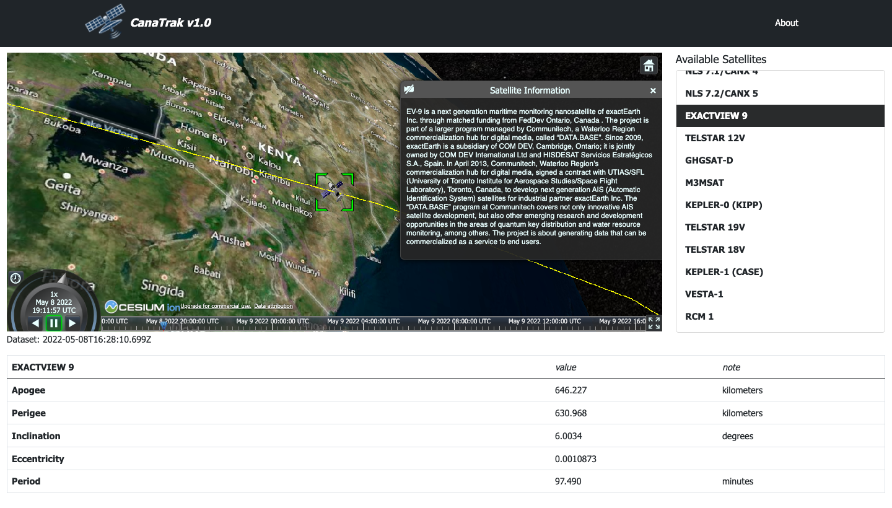

Here's a couple of projects that I've worked on...

A simple, web-based visualizer for Canadian satellites in Earth orbit. Users can view some of the 85 Canadian-operated or Canadian-supported satellites in low-Earth orbit (LEO) as well as beyond. The server is built with Express.js where data is gathered on a daily basis from Space-Track.org, and the front-end is done with Bootstrap and CesiumJS (an API for modelling Earth space).
View demo GitHub repo